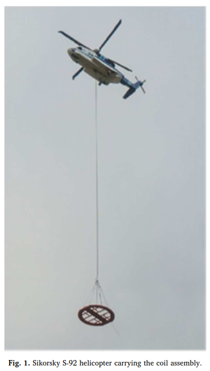
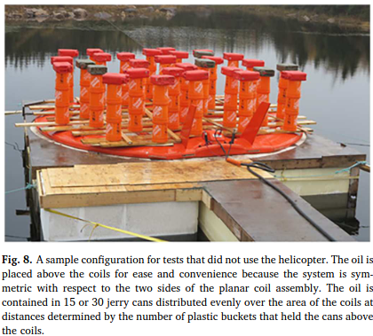

This project aimed to address the critical need for effective oil spill detection in the challenging environment of the Arctic. The project involves the development and deployment of a nuclear magnetic resonance (NMR) system capable of detecting oil spills under sea ice without requiring personnel to be on the ice, thereby enhancing safety and efficiency.
This project uses the Earth’s magnetic field to detect oil. The system consists of a 6-meter diameter pre-polarization and RF coil, which is designed to be lightweight enough to be transported and deployed by a helicopter. This coil system, weighing approximately 1000 kg, is placed on the ice surface while the helicopter hovers nearby. The system is capable of detecting a thin layer of oil, as little as 1 cm thick, trapped under 1-2 meters of ice within a few minutes of measurement time.
The coil system can cover an area of approximately 30 square meters per deployment, allowing for efficient surveying of large areas to detect oil spills. The technology overcomes several challenges, including the need to suppress the NMR signal from the abundant sea water beneath the ice and the non-uniform sensitivity caused by varying orientations of the magnetic fields involved in the detection process.
The project's development involved extensive testing and validation through a series of reduced-scale experiments to prove feasibility, followed by full-scale demonstrations. These tests were conducted under various conditions to ensure the robustness and reliability of the system. The final tests were performed using a surrogate ice platform to mimic the actual conditions of sea ice, successfully detecting the presence of oil beneath the ice layer.
This project represents a significant advancement in the field of environmental monitoring and oil spill response. By enabling detection of oil spills under sea ice, the NMR system developed in this project provides a vital tool for protecting the Arctic environment and ensuring a swift and effective response to potential oil spills.


References:
Figures 1&8: S. A. Altobelli, M. S. Conradi, E. Fukushima, J. Hodgson, T. J. Nedwed, D. A. Palandro, A. Peach, N. J. Sowko, and H. Thomann, "Helicopter-borne NMR for detection of oil under sea-ice," Marine Pollution Bulletin 144, 160-166 (2019).
S. A. Altobelli, M. S. Conradi, E. Fukushima, J. Hodgson, T. J. Nedwed, D. A. Palandro, A. Peach, N. J. Sowko, and H. Thomann, "Helicopter-borne NMR for detection of oil under sea-ice," Marine Pollution Bulletin 144, 160-166 (2019).
M. S. Conradi, S. A. Altobelli, N. J. Sowko, S. H. Conradi, and E. Fukushima, "Earth's field NMR detection of oil under arctic ice-water suppression" J. Magn. Reson. 288, 95--99 (2018).
M. S. Conradi, S. A. Altobelli, N. J. Sowko, S. H. Conradi, and E. Fukushima, "Adiabatic sweep pulses for earth's field NMR with a surface coil," J. Magn. Reson. 288, 23--27 (2018).
M. S. Conradi, S. A. Altobelli, N. J. Sowko, S. H. Conradi, and E. Fukushima, "Pre-polarization fields for earth's field NMR: Fast discharge for use with short T1 and large coils," J. Magn. Reson. 281, 241--245 (2017).